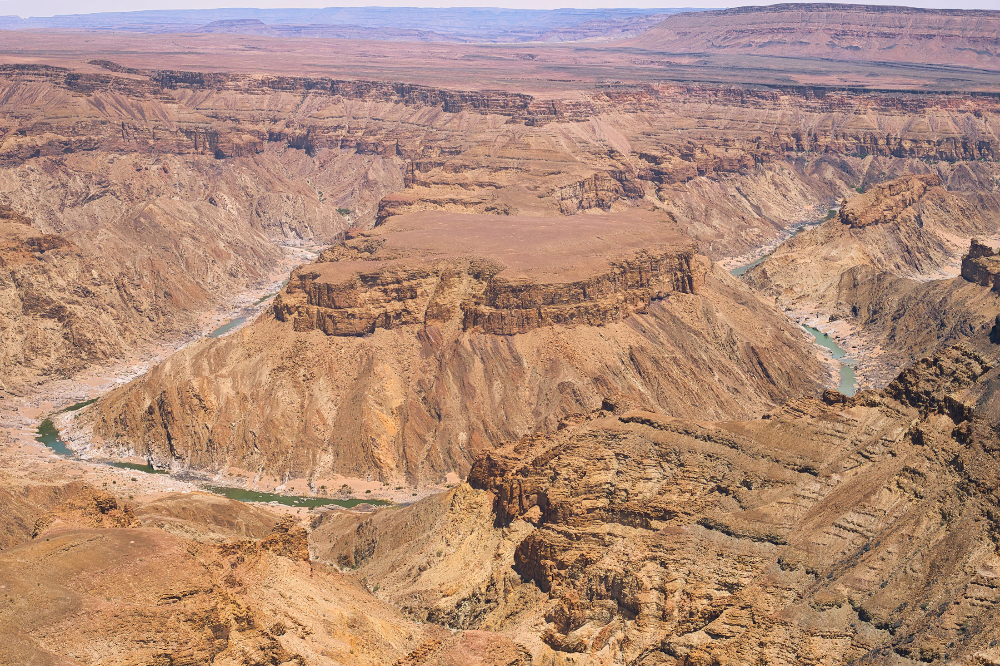

Gondwana ERP Rhino Sanctuary
40,000ha secured
Within a 200,000 ha protected landscape. A joint venture with the Gondwana Group, Namibia's largest inbound tourism operator: ERP leads rhino security while tourism continues across the same land, and tourism levies fund operations after ERP funded the capital.